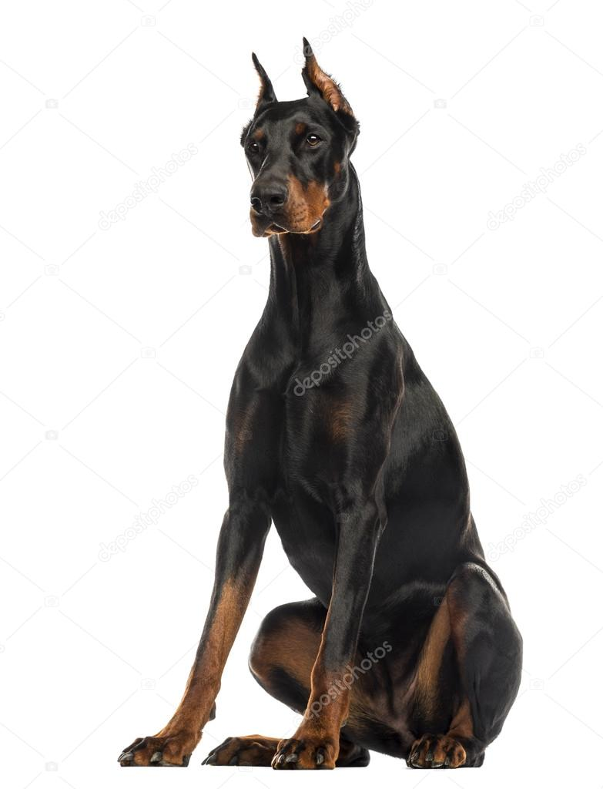

Razas medianas
Los perros de tamaño mediano pesan entre 10 kg y 25 kg y la mayoría de ellos tienen un cuerpo definido
y músculos bien equilibrados. Sin embargo, también hay un tipo de perro mediano que es alto y delgado.
La característica principal de los perros de tamaño mediano es que tienen aspectos tanto de los perros grandes
como de los perros pequeños en cuanto a capacidad atlética e inteligencia.
Algunas razas y sus caracteristicas:
Cocker
- Esperanza de vida: 12-14 años
- Altura: 33-45 cm
- Peso: 10-25 kg
- Su cabeza es bien modelada sin ser muy fina ni muy tosca
Por otro lado, la nariz es ancha y el hocico es cuadrado
Sus orejas son largas y caidas
Doberman
- Esperanza de vida: 12-14 años
- Altura:70-80 cm
- Peso:25-45 kg
- La nariz, más ancha que redonda, debe tener fosas nasales grandes.
El cuerpo compacto, musculoso y poderoso